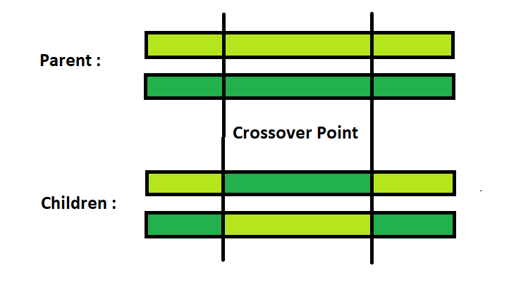
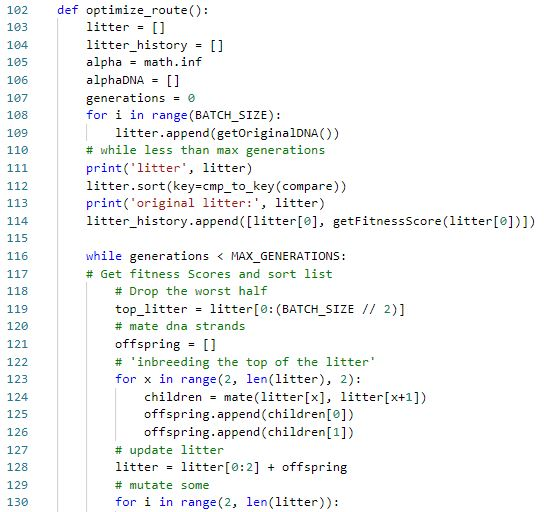
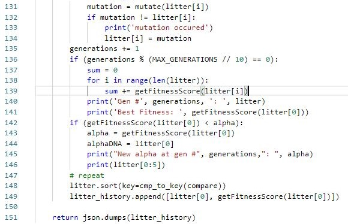
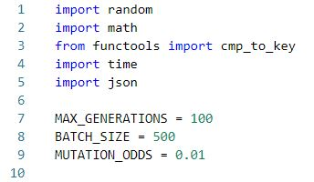
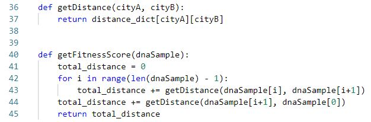
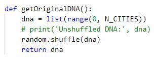
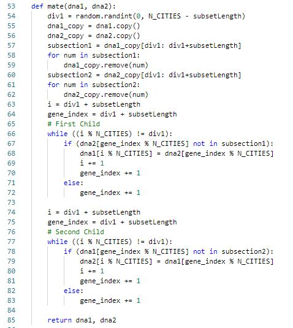
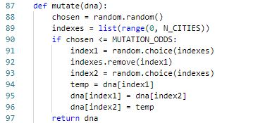

<div class = "centered">
    <header class="header">About the Algorithm</header>
    <main class="main">
        <h4>Background</h4>
        <article class="article">
            &nbsp;&nbsp;&nbsp;&nbsp;&nbsp;&nbsp;This algorithm is fairly straight-forward in that it is easily related to the basic elements of the biological evolutionary process. 
            We start with an intial population, have some of them mate, get offspring which occasionally have genetic mutation for better or worse, and along the way only the most fit survive. 
            We have all of those elements in this algorithm as you'll see below. So without getting into the nitty gritty of the actual code (if interested please visit my github page 
            <a href="https://github.com/ErikIverson/genetic-algorithms">here.</a>). So follow along to see how this genetic algorithm was actually implemented.
        </article>
        <br><br>
        <h4>The Genetic Cycle</h4>
        <br>
        <h6>Encoding the Problem to DNA</h6>
        <article class="article">
            &nbsp;&nbsp;&nbsp;&nbsp;&nbsp;&nbsp; The first crucial step is to find a way to encode the larger problem at hand into either a string or list format. This is because string/list 
            manipulaiton is nice to work with and plays well with the rest of the cycle. For us, we have n cities and need to come up with a route to visit each one once while return to the start.
            If these cities have labels 1, 2, 3... n, we can conceptualize a route between them as an ordered list with each vertex in some relative position amongst the rest. For 5 cities, we may 
            have a route [2, 4, 3, 1, 5]. Important to note this will have the same "fitness" as, say, [3, 1, 5, 2, 4] since we can think of them as a cycle where the last element points to the first element.
            And so now we can represent any route amongst n cities with this simple list structure.
        </article>
        <br>
        <h6>Configure Parameters</h6>
        <article class="article">
            &nbsp;&nbsp;&nbsp;&nbsp;&nbsp;&nbsp; The next step before we dive in is to decide what parameters we'll need and what values to assign to them. In the case of a genetic algorithm, there 
            are three main ones to worry about - Batch Size, Mutation Rate, and Max Generations. Batch Size will determine how many instances of these "DNA" lists we allow in each generation. This 
            does unfortunately mean that once we mate and breed new DNA, that some of the old ones will have to go. Mutation Rate as you'll see later will determine how often a DNA sample gets randomly
            mutated - either new from the new or old generation. And finally, Max Generations simply determines how many loops we'll do through the evolutionary cycle. After some trial and error with 
            analysis afterwards, I ended up using Batch Size = 500, Mutation Rate = 0.01, and Max Generations = 100.
        </article>
        <br>
        <h6>Fitness Evaluation</h6>
        <article class="article">
            &nbsp;&nbsp;&nbsp;&nbsp;&nbsp;&nbsp; To find out which DNA are better than others, we need to first create the fitness evaluation function. This was done simply by looping over a given 
            DNA list, and then looking up in the Distance Matrix (that was given to us) how far it is from one location to another. We sum up the total round trip distane and return that total as 
            the DNA's fitness. In our problem, we are trying to minimize this distance so smaller values will be superiora and favored.
        </article>
        <br>
        <h6>Initialize Generation #1</h6>
        <article class="article">
            &nbsp;&nbsp;&nbsp;&nbsp;&nbsp;&nbsp;To begin, we'll randomly generate <span style="font-style: italic;">BATCH_SIZE</span> = 500 lists that each include the integers [1..n] 
            in any order. This will give us some DNA that's better than others according to the fitness function. We can now begin the repetitive portion of this algorithm which is looped
            through <span style="font-style: italic;">MAX_GENERATION</span> = 100 times over.
        </article>
        <br>
        <h6>Sort & Euthanize</h6>
        <article class="article">
            &nbsp;&nbsp;&nbsp;&nbsp;&nbsp;&nbsp; A sad truth we must all accept someday is that the world is not a perfect place. And in the wild that means that certain organisms don't make it
            past a certain age because of their inferior nature. The same must happen here as we have little use for those DNA which have the worst fitness scores. These DNA are likely routes which 
            are crossing back and forth in a zig zag pattern and are clearly suboptimal routes. Therefore we can discard the bottom half of these and only bring forward the top 50 percent of DNA - 
            the ones where they are likely one or two matings or mutations away from being absolutely optimal. These ones will move on the mating stage of life.
        </article>
        <br>
        <h6>Mating Function</h6>
        <article class="article">
            &nbsp;&nbsp;&nbsp;&nbsp;&nbsp;&nbsp;Now comes the fun part where the DNA start getting it on with the procreation. As in the wild, the alpha females tend to have a way of finding 
            the alpha males in order to create the children with best possible chance of survival. As such, and noting that our batch is still sorted from the latest step, we'll have the first 
            DNA mate with the second, the third with the forth and so on. Down the list they pair up and are mated with our mating function which returns two more DNA samples, effectively putting us
            back up to our original Batch Size count. The specifics of the mating function work like this: 1) We are given two DNA strands 2) We randomly select a sublist of size n // 3 starting at 
            a random index from (0, n - n//3). These two sublists are then swapped to each others original string and all the other indexes are returned in the same relative order to each other.
            It is definitely a hard one to conceptualize so here's graphic to support my description.
        </article>
        
        <br><br>
        <h6>Mutation</h6>
        <article class="article">
            &nbsp;&nbsp;&nbsp;&nbsp;&nbsp;&nbsp; Each time through a generation, the DNA has a chance to be mutated. Even the older ones because who knows, they may be one mutation away from 
            becoming the alpha strand. So after we've breeded our batch back up to full size, we loop through them all (exepct index 0) and with probability of 0.01 or 1%, we randomly select two distinct indices
            between 1:n, and make a swap with the genes in the DNA list. We make sure to not run the risk of mutating the current top DNA strand because we want to hold onto our current best 
            solution and make sure we don't regress backwards in evolution.
        </article>
        <br>
        <h6>Results & History</h6>
        <article class="article">
            &nbsp;&nbsp;&nbsp;&nbsp;&nbsp;&nbsp; After we loop through the generational cycle 100 times, we will have our final batch of generation #100. The first DNA entry in this batch therefore, 
            is our final most optimal route that we've found throughout the entire algorithm. For the timeline component on the home page, we needed insight on all the generations so I've actually 
            aggregated the top DNA sample for each generation, pushing them onto a "history list" and that is the actual object the gets returned from the Cloud Function where I'm hosting this algorithm.
            You'll note that often the top route stays the same for quite a few generations in a row, and only so often we get a breakthrough and a more optimal best route. This is natural and to be
            expected because evolution happens slowly and randomly. Though, more often than not, we do find ourselves with what appears to be the most optimal route given these n points.
        </article>  
        <br>
    </main>
    
    
</div>







